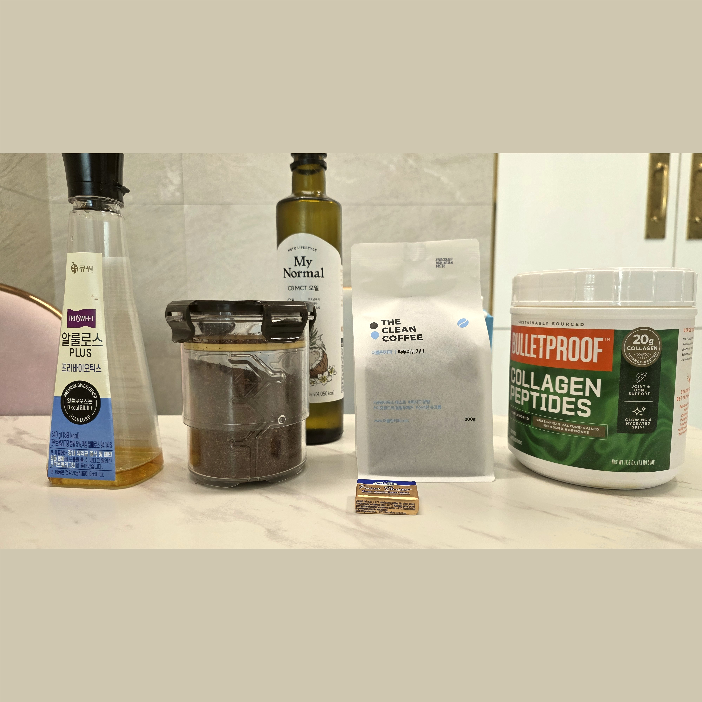
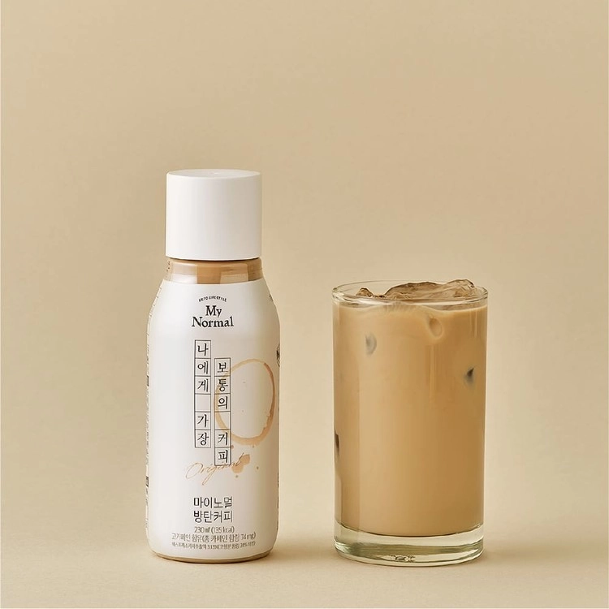
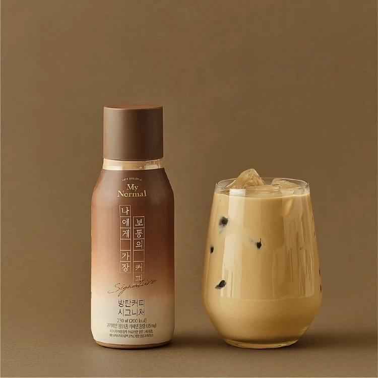

☕ 더클린커피 콜롬비아 스페셜티 방탄커피전용원두
다영's Pick : 원두는 고소할수록 방탄커피와 잘 어울려요. 더클린커피는 곰팡이 독소(마이코톡신)를 걸러내 고소한 풍미를 그대로 살렸고, 바꾸고 나서 두통 없이 오히려 머리가 맑아지는 걸 느꼈어요.

☕ 더클린커피 유기농 디카페인
다영's Pick : 스위스워터 공법으로 카페인만 제거해 원두 본연의 향은 그대로예요. 카페인 없이 방탄커피 루틴을 이어가고 싶은 분들께 추천해요.

🧈 무염 목초버터 : 프레지덩트
다영's Pick : 목초 소 우유 버터라 오메가-3·CLA가 높고 지방의 질이 달라요. 깔끔하고 담백해 방탄커피 처음 시작하는 분께 딱 맞아요.

🧈 무염 목초버터 : 이즈니
다영's Pick : 프랑스 노르망디 AOC 인증 버터예요. 유지방이 높아 더 진하고 고소해요. 풍미를 제대로 즐기고 싶다면 이즈니예요.

🫙 기버터 (Ghee)
다영's Pick : 버터를 정제해 유당과 유청 단백질을 제거한 순수 지방이에요. 유당불내증 걱정 없이 방탄커피에 넣으면 더 진하고 고소한 맛이 나고, 야채·고기 볶을 때도 맛있어요.

💧 MCT 오일 : 마이노멀
다영's Pick : MCT 오일의 핵심은 C8(카프릴산) — 케톤으로 가장 빠르게 전환되는 지방산이에요. 마이노멀은 C8·C10 중심 구성으로 방탄커피 목적에 딱 맞아요.

💧 MCT 오일 : 포켓용
다영's Pick : 여행이나 외식할 때 간편하게 들고 다니기 좋아요. 작은 가방에도 쏙 들어가고, 뜯어서 바로 넣으면 돼서 어디서든 키토제닉 라이프를 이어갈 수 있어요.

🍬 알룰로스 : 액체
다영's Pick : 혈당 스파이크 없이 단맛을 내는 천연 감미료예요. 체내에서 거의 소화되지 않아 칼로리가 낮고, 스테비아보다 뒷맛이 훨씬 깔끔해요.

🍬 알룰로스 : 분말
다영's Pick : 액체형과 성분은 같지만 계량·보관이 더 편해요. 요리나 간식에도 활용하기 좋고, 양을 세밀하게 조절하고 싶다면 분말형이 딱이에요.

🧂 히말라야 소금
다영's Pick : 방탄커피에 한 꼬집 넣으면 맛이 훨씬 부드럽고 풍미가 깊어져요. 천연 미네랄이 풍부한 히말라야 핑크소금을 그라인더로 매번 신선하게 갈아 써요.

🥛 콜라겐 파우더 (Bulletproof)
다영's Pick : 콜라겐 펩타이드는 관절·피부·뼈를 지탱하는 아미노산이에요. 갱년기 이후 골밀도 유지에도 효과적이라는 연구 결과가 있어요. 열에 강해 뜨거운 방탄커피에 타도 성분 파괴 없이 꾸준히 먹기 편해요.
쿠팡 바로가기 →
🥛 동원 덴마크 생크림
다영's Pick : 진하고 고소한 생크림이에요. 방탄커피에 조금 넣으면 라떼 느낌이 확 살아나요. 성분이 생크림 하나라 첨가물 없이 방탄커피 원칙에 딱 맞아요.
마켓컬리 바로가기 →
🥛 파스퇴르 생크림
다영's Pick : 저온 살균(HTST) 방식의 깔끔한 생크림이에요. 동원보다 담백한 라떼 느낌을 원할 때 선택해요. 신선한 풍미가 있어요.
마켓컬리 바로가기 →
🎁 완제품 방탄커피 : 마이노멀 오리지널
다영's Pick : 바쁜 아침, 직접 만들기 힘들 때 선택하는 다영이의 오리지널.

🎁 완제품 방탄커피 : 마이노멀 시그니처
다영's Pick : 더 진하고 풍부한 맛을 원할 때 딱이에요. 기버터가 들어있어 유당불내증 있는 분도 부담 없이 마실 수 있고, 고소하고 묵직한 포만감이 오래 가요.